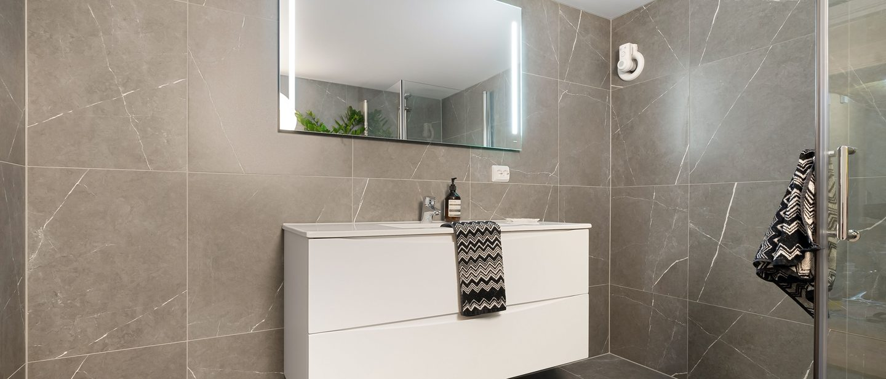
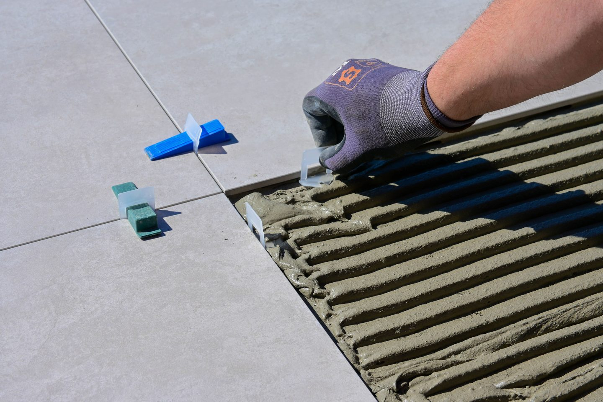

Large-format porcelain, set out to the millimetre.
Porcelain and ceramic tiling to walls and floors across London, including slab formats that need dry-lay, vacuum handling and a substrate flatter than most floors arrive.

Big tiles are unforgiving.
A 300×600 tile hides a lot. A 1200×2400 porcelain slab hides nothing.
Every dip in the substrate becomes lippage, and every millimetre of setting-out error compounds across the room.
That is why large-format work is a different job rather than the same job at a bigger size. The floor has to be surveyed and levelled to a tighter tolerance, the slabs have to be lifted and placed with suction frames, and the adhesive has to be back-buttered and beaten to full coverage so there are no voids under a surface that will be walked on for decades.
Get the preparation right and porcelain is the most durable, lowest-maintenance surface available. Get it wrong and it telegraphs every shortcut.
What we install.
Large-format slabs
Formats up to 1200×2400 and beyond, dry-laid, vacuum-handled and set with the substrate surveyed to tolerance first.
Floor tiling
Residential and commercial floors, including heavy-traffic areas where slip resistance and build-up depth are specified rather than assumed.
Wall tiling & cladding
Full-height walls, shower enclosures and feature elevations, set out so cuts land where they are least visible.
Book-matched panels
Continuous-vein porcelain matched across a wall or island so the pattern reads as one surface.
Precision cutting
Mitres, drainage cut-outs, socket and tap penetrations cut cleanly rather than covered with trim.
Underfloor heating
Uncoupling and heating layers specified with the right adhesive and commissioning sequence.

What sits behind the tile.
The sequence for a large-format floor. Skipping a stage shortens the life of everything above it.
- 01Substrate surveyed for flatness and deflection
- 02Levelling compound or uncoupling layer where required
- 03Dry-lay to confirm setting out, cuts and shade variation
- 04Adhesive back-buttered, notched and beaten to full coverage
- 05Movement joints set out to the room and the heating build-up
- 06Grout and silicone specified to the joint width and the material
Porcelain projects.
Porcelain and ceramic.
What is the largest tile you can install?
We regularly install 1200×2400 slabs and can handle larger formats. The constraint is usually access and substrate flatness rather than the tile itself. Both are checked on the survey.
Porcelain or ceramic, which should I choose?
Porcelain is denser, less porous and harder wearing, which makes it the default for floors and wet areas. Ceramic is lighter and often cheaper, and is perfectly suitable for many wall applications. The right answer depends on where it is going and what it has to take.
Can you match tiles to an existing floor?
Sometimes. Ranges are discontinued and batches vary in shade, so it depends on the specific product. We will tell you honestly if a clean match is not achievable rather than fitting something that will always look patched.
Do you supply the tiles as well as fit them?
We can supply and fit, or fit material you have sourced. Either way we will review the specification before ordering, because some products are unsuitable for the substrate or the use they are intended for.